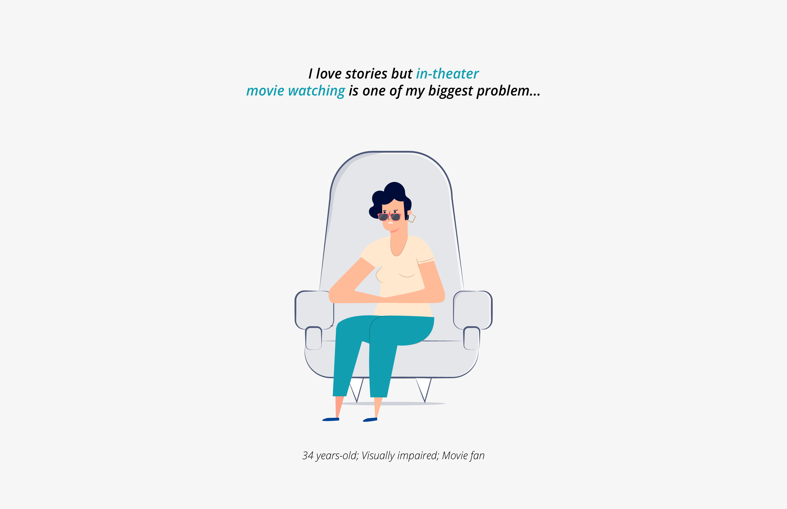
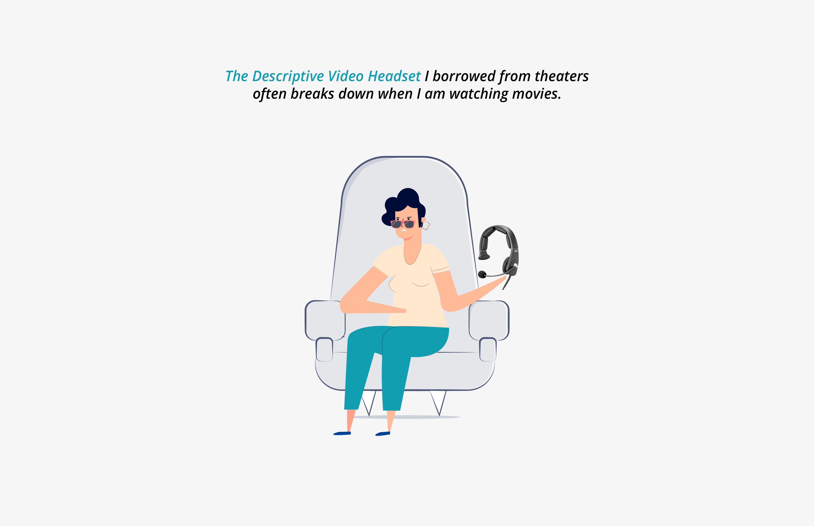
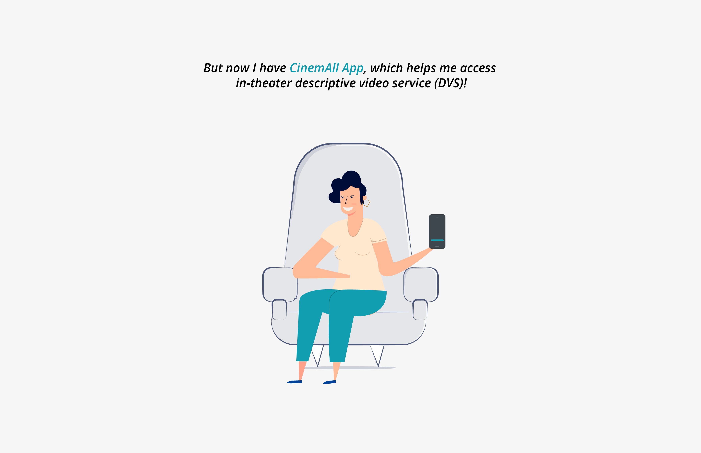
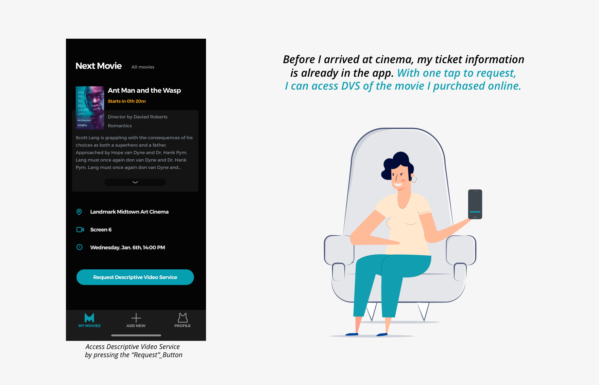
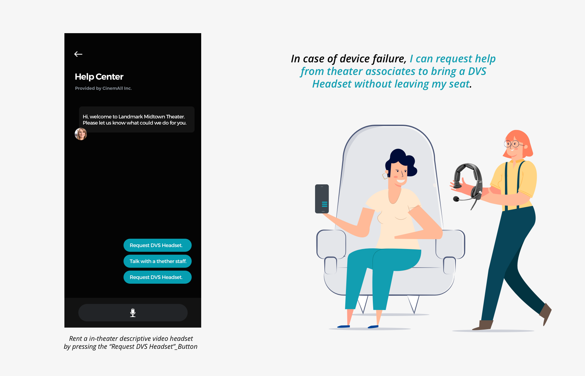
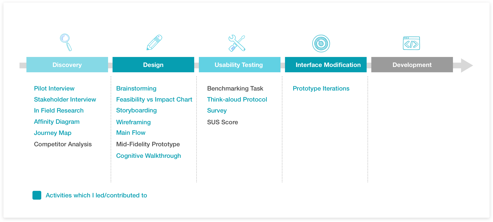
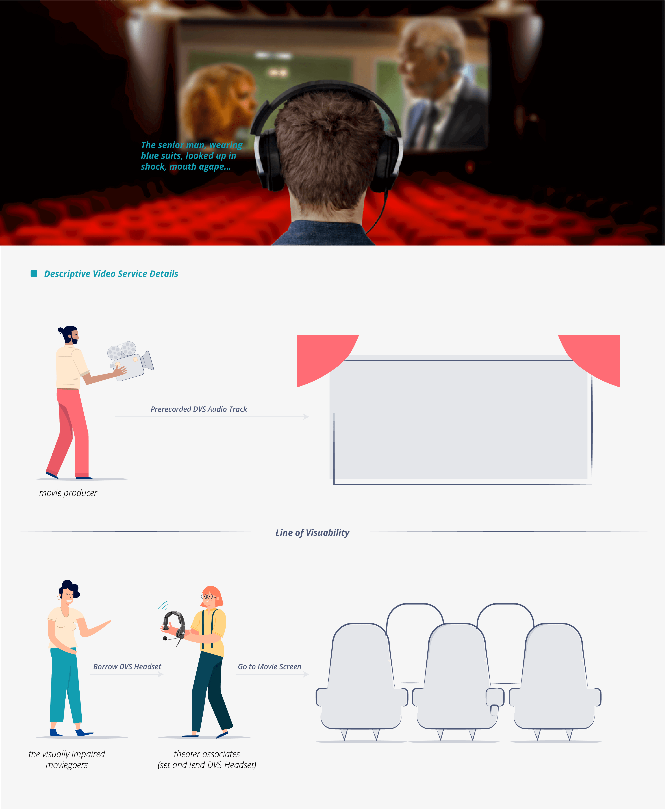

Meet Charlotte...





CinemAll App
Business Goal and Hypothesis
Through pilot interviews, we discovered that for visually impaired moviegoers, their movie watching experience is less ideal. Our team hypothesized that a mobile app will improve current movie watch experience, encourage more visually impaired moviegoers to the theaters, and increase ticket sales for theaters like Regal or Landmark.
Final Delivery
Process Overview

Research
Visual impairment # Secondary Research
From our pilot interview, we discovered that there are multiple types of visual impairments. To gain empathy towards our users, we conducted a secondary research about main types of visual impairment. We achieved an agreement to limit the scope of our main users to visually impaired moviegoers. If this project proves to be successful, we could broaden our main users group to the blind moviegoers as our next step.

Descriptive Video Service (DVS) # Secondary Research
To understand current service and user behavior, we also conducted a secondary research on what is Descriptive Video Service. We discovered that Descriptive Video Service is a narration that describes what is happening on-screen, including physical actions, facial expressions, costumes, settings and scene changes.
# User Research
Interviews and In-field Research
To identify why the users are unsatisfied with the Descriptive Video Service, we conducted multiple in-theater user research at Atlanta theaters to gather qualitative data, including interviewing three visually-impaired moviegoers, interviewing four movie managers as well as going through the process of renting and using DVS. With the data we collected, we analyzed the design guidelines through affinity diagram as a group; I led the analysis through user journey map to visualize identified pain points in a visualized time-line span.


User Pain Point
Lack of Independency
For visually impaired moviegoers, current process of acquiring a DVS headset requires them to go through an extra step: Interact with theater associates, who are normally not professional enough, to acquire the DVS headset. Such inevitably client-associate interaction left them feeling treated different than normal vision clients. To make things worse, such interaction requires the target users arrive earlier than other, line up to speak with the associate and leave their personal information to theaters. With accessible technology like Voice-Over to boost their independency, visually impaired moviegoers have a strong wish of being independent.

Lack of Immersive Experience
Limited by hardware technology and unprofessional maintenance, DVS headsets often breaks down after the movie starts. Visually impaired movie goers have no way to avoid and fix the problem. They have to squeeze out the movie audiences, asked the theater associates for a headset change, get a new DVS headset without knowing if such disruption will happen again. This action to repair device problem always leave target users missing important scene, leaving an immersive movie watching experience to them.

Design Solution
Brainstorming
We conducted two rounds of brainstorming sessions to drain our design brains.A large scope of potential solutions was uncovered in this process. We filtered these ideas through two criteria, Feasibility and Its Impact to Users. Solution that has a high impact on our target users and also is high feasible to develop is the ideal solution that we are aiming for.

Smart Kiosk
One of our solutions is to eliminate user-client interaction. Requesting a DVS headset through a smart kiosk, the target users can feel more independent than relying on anyone in theaters. However, since we leveraged on current DVS headsets, the rate of error still remains the same, which means it is still very likely that users will have a less immersive movie experience when they fix the DVS headset problems.


An App to Requests DVS Headset
The second potential design direction is to allow users request DVS headset before they arrived at theaters. It has the privilege of eliminating unprofessional communication with associates when requesting and setting up the DVS headsets. Also when error happens, users can request help from associates to bring a new DVS headset. However, when we looked at the storyboards, we discovered that there still a need for users to get the request DVS headset from a theater associate, not giving users fully independency that they wished. Also the request frequency should be similar to the current device error rate. The frequency that users enjoy a less immersive movie is still the same.


An App to Request DVS Audio Track
Another potential design direction is to get rid of current DVS headset, but to leverage on users’ mobile phone to access DVS. This can give users the maximum freedom to access the DVS at any time without relying on anyone. Since users will be responsible to take care of mobile devices, it will be less likely that their mobile phone will breaks down. This design solution provides an independent and immersive experience to users.


Strength and Weakness Comparison
Based on the storyboards that I draw, our team analyzed the strength and weakness in terms of how well it solved the two main pain points. Also potential obstacles to ship to ideas are also mentioned in the following chart. Through the analysis, we agreed that the last concept: An app that users can request DVS, is our next step design direction.

However, we acknowledged that theaters might ban the usage of mobile phone, since the light can be obtrusive to other moviegoers. To solve this problem, we decided to follow a dark pattern for this app. To make sure our target users can perceive information provided by the app easier, high contrast is another design pattern when we seek brand color.

Main Flow Design
Leverage on Real-World Experience for a Smooth Transition
Since the current service flow is moved to a mobile app, for a smooth transform, when designing the flow, we referenced on the current real-world experience so that users can be more familiar with the mobile app version service. I generated to task analysis chart based on the real-world renting DVS headset experience as a reference for main flow design.

New Movie Content Leakage Problem
The only competitor we identified through competitor analysis is an app called ActiView. However, by researching their feedback we discovered that, users are requiring such service to collaborate with more new movies. We think that such problems have a high relationship with their “download” feature. Allowing users to download DVS to their local phone greatly harm the interest of theaters and movie producers, thus impact their service collaboration and growth.

Although our service utilized streaming function, but when we design our main flow, we make sure that before users request DVS, their phone is linked with theater Wi-Fi, which means they have arrived at theaters and are the authorized users.

Avoid Extra Step to Start Using the App
When designing the flow, one key comparison I made is that should the first screen use Theater or Movie serve as the start point? Based on interview data, the three participants all have a specific theater that they visited. However, one second thought, I discovered that when using “theaters” as the first step, if requires new users to select that cinema first. This is an unnecessary step from users’ perspective since users’ goal is highly related with DVS movies, rather than the DVS providers —theaters.

Design Iterations
Prevent Big Jump When Providing Information
In our first version interface, camera is on when users open the app. However, this causes users focuses more on the “Scan Movie Barcode” option. It has two main drawbacks: Open camera without users ‘permission can cause privacy problem that making users panic, reducing user satisfaction level; It also causes the information hierarchy problematic as photo will attract users' attention first, neglecting the intended options.

Redesign Info Box for the Visually Impaired
When accessing WI-FI, we allow the interface to activate pop-up box. For normal vision users, they can saccade the information to make an option, however, such saccade behavior is a difficult for users with visual impairment. Reconfirming the action using the same word can leverage on users’ short-term memory. This will make users more confident when they make an option.

Leverage on User Habit to Minimized User Selection
For users who prefer to manually select, such manual selection speed can be boost by several features like nearby, zip code or history. These features aim at shorten down the lists that users need to go through to avoid large back and force selection.

Usability Testing
Main Flow Chart

Prototype with Voice Over Feature
Comparing different prototype tools, including Axure, Framer, Invision and JustInMind, we discovered that JustInMind has the function to include audio files to the prototype.

Future Design Direction
Color Selection: High Contrast and Right Emotion
Revealed by our benchmarking tasks,1 out of 3 users think that red color is confusing to them. Although Netflix also used a red color as their brand color, in our app, these users leverage on the color to know if they have taken a right decision, especially when they cannot view the text clearly.

Based on the finding, I tested multiple color in the range of purple, green and blue to discover the highest contrast utilizing WebAim tool. These cold color tones convey a sense of confirmation and thus become my color range. As a result, a turquoise color is selected for passing the major contrast color ratio.

Reduce User Selection to "Zero"
Through users testing, we discovered that users prefer the quickest way to match them with the DVS movie they want to watch. Scan feature, although works well for normal vision users, makes visually impaired users feels reluctant, since it leverages on users’ weakest ability. Thus geolocation and data-sharing can be two good approach to minimize users’ interaction, since it moves the difficult process of match to the system’ side.

Geolocation service that can detect users’ location can be used when users sit down at specific screen. The only interaction required is to tap a button to start the auto detection. However, it has high technology requirement on the accuracy of location, especially at the border of two screen. Another method can be leverage on previous ticket purchase records. By syncing CinemAll App’s service with theater partners like Regal and Landmark, users can automatically view such result by directly open the app. But this feature relies on our marketing strategy and collaboration with theaters to see if such data can be shared with us.

I went through several design iterations to determine the next version of layout of the mobile app. The design focus for auto detection is focused on allowing users to adjust the auto detection result in case of error and the design focus for theater data sharing is the necessary information to display.

Single Column Layout
When I was responsible for taking notes as well as observing user behavior when my teammates conducted benchmarking tasks, I noticed that when the interface was a double-column layout, users need to make back-and-force figure movements to make sure there is no element neglected. But when the interface is a single column layout, users’ finger movement is simplified to a linear movement, thus a reduced error rate and more efficient selection.

Based on such user behavior pattern, I remodified the interface so that overall it follows a single column layout for any vertical selection process. Inspired by this, making sure users’ horizontal finger movement is reduced to the minimal can also be valuable. Thus, making sure all the buttons for the same task is located on the same height can be valuable to users as well.

Proposed Prototype Version 2


Next Step
Limited by the time and resources, I wasn't able to conduct a second usability testing to collect users' feedback upon the design. But if there is opportunities, I would conduct another round of benchmarking task and think-aloud protocol. Important metrics like user satisfaction rate can be used to see if there is any improvement for the design modifications.
My Reflection
Considering the context when designing tasks. This App serves for a whole process from purchasing movie tickets to walk out the theater. Different contexts have high influence on how each stakeholder behave. For example, the manager at the Regal Cinema told us, they wouldn't provide service prior the arrival of the users. However, the visually impaired users would love to be prepared before their arrival. Considering different context limitations throughout the process is such a great lesson for me.